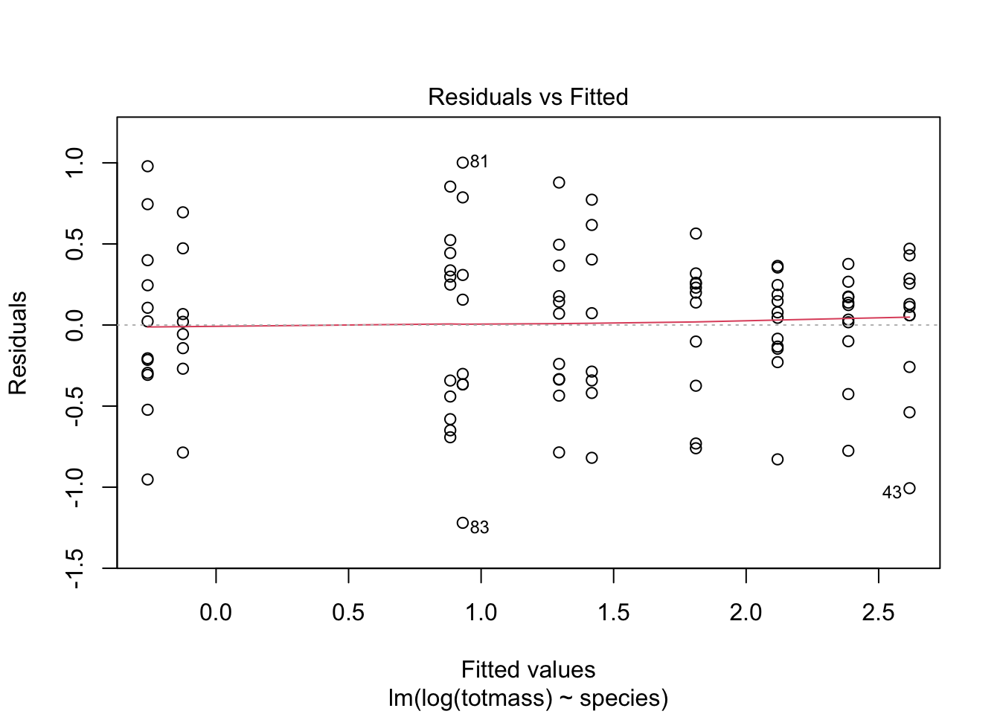

# should haves (from last week)library(tidyverse)library(here)library(janitor)library(ggeffects)library(performance)library(naniar) # or equivalentlibrary(flextable) # or equivalentlibrary(car)library(broom)# would be nice to havelibrary(corrplot)library(AICcmodavg)library(GGally)library(MuMIn)
Introduction
This analysis revolves around a study conducted at Harvard Forest in 2005, which explored the impact of prey availability on Sarracenia physiology. Sarracenia, also known as pitcher plants, are carnivorous wetland flora indigenous to North America (Farnsworth and Ellison). Pitcher plants are of interest to scientists because while plants typically contain an allometric relationship between nutrient and physiology (notably leaf size), referred to as the ‘world-wide leaf economics spectrum’ (Farnsworth and Ellison) this near-universal rule does not apply to carnivorous plants (such as Sarracenia). Due to the fact that carnivorous plants have low photosynthetic rates along with nitrogen and phosphorous use efficiency, their physiology has an outsized reliance on prey capture (Farnsworth and Ellison). Since prey capture is a leading indicator of carnivorous plant health (indicating crucial metrics like survival, growth, and reproduction) it is important to test how Sarracenia react to changes in the abunace of prey (Horner, Steele, Underwood, and Lingamfelter). Additionally, predicting individual biomass of Sarracenia based on morphological, physiological, or taxonomic characteristics is valuable because it allows a better understanding of their growth patterns, resource allocation, and ecological roles, potentailly shedding light on effective management practices and their contributions to ecosystem services. The study addressed the effects of prey availability on a litany of factors, using photosynthetic rate (Amass), chlorophyll fluorescence, growth, architecture, and foliar nutrient and chlorophyll content of ten pitcher plant (Sarracenia) species as indicators. A few interesting questions raised by this experiment is how prey density impacts Sarracenia growth and health, how does plant age alter their appetite and physiology, and ultimately when Sarracenia have unlimited resources whether their morphological and physiological allometric relationships resemble those of non-carnivorous plants (Lorne). This resulted in the hypothesis that increased prey availability would increase Amass, photosynthetic N- and P-use efficiencies, relative biomass allocation to photosynthetically efficient, non-predatory phyllodes rather than pitchers, overall plant biomass, and reduce stress-related chlorophyll fluorescence.
Methods
Code
sarr <-read_csv(here::here("data.hw5","knb-lter-hfr.109.18 (3)", "hf109-01-sarracenia.csv")) %>%#make the column names clearclean_names() %>%#selecting the columns of interestselect(totmass, species, feedlevel, sla, chlorophyll, amass, num_lvs, num_phylls)
a.
Two plants of each Sarracenia species were allocated to one of six feeding levels in a regression design ranging from 0 to a quarter gram of finely ground wasps per feeding (for small sized species), 0 to half a gram (for medium sized species), and 0 to one gram (for large sized species) (metadata). Plants were fed once a week for 7 weeks, with the above ground size and amass (mass-based light-saturated photosynthetic rate of youngest leaf) measured before beginning treatments (metadata). In total, the measurements contain twelve plants per ten different Sarracenia species, equaling 120 total plant observations (metadata).
b.
We organized the data by first importing the file into the “ENVS-193DS_homework-05” folder and placing it in the “data.hw5” folder. We then used the read_csv and here function to call the data into this document, which we then proceeded to clean the data by making the column names clear (‘clean_names’) and then selected only the parameters which were pertinent to this assignment (‘select’). Later, we will drop the missing data using the ‘drop.na’ function.
c.
Discussion: Since there is a decent amount of missing data in a few parameters, it is important to identify where there is missing data to identify where bias and errors in the analysis might appear and skew the results.
Code
#see which columns have missing data, and the amount per columngg_miss_var(sarr)
Caption: The gg_miss_var function highlights missing data within the “sarr” data set. The plot highlights missing data in the chlorophyll, amass, sla, num_phylls, and num_lvs columns, leaving only totmass, species, and feedlevel as columns without missing data.
d.
Discussion: After calculating pearson’s r, it is apparent that none of the variables a strong correlation, since the highest value was only .32 between amass and sla. The correlations between sla and feedlevel, chlorophyll and sla, num_lvs and feedlevel, num_phylls and sla, and num_phylls and chlorophyll all had small, negative r values. On the other hand, chlorophyll and feedlevel, amass and feedlevel, num_phylls and feedlevel, and sla and num_lvs all have small, postive r values, with their being no correlation between amass and num_phylls (r=0).
Code
sarr_subset <- sarr %>%#create a new dataset of sarr, which drops the missing datadrop_na(sla, chlorophyll, amass, num_lvs, num_phylls)
Code
#calculate pearson's r only for numerical values onlysarr_cor <- sarr_subset %>%select(feedlevel:num_phylls) %>%cor(method ="pearson")#creating a correlation plotcorrplot(sarr_cor,#change the shape of what's in the cells#point to the left=negative relationship, right=positive relationshipmethod ="ellipse",#adds the correlation values in black over the elipsesaddCoef.col="black")
Caption: To determine the relationship between the numerical variables in our data “sarr_subset”, we calculcated pearson’s r and highlighted the correlation using a correlation plot. The numerical variables we compared were feedlevel, sla, chlorophyll, amass, num_lvs, and num_phylls.
e.
Discussion: After visualizing the relationships between different variables in pearson’s r, the ggpair function shows the relationships between different variables depending on what type of data the variable is. Box plots are used to represent the relationships between species (categorical) and the other variables (continuous or discrete), while scatter plots and line graphs show the relationships between continuous and discrete variables.
Code
sarr_subset %>%#selects columns from species to num_phylls, which only excludes totmass (which is the resonse)select(species:num_phylls) %>%ggpairs()
Caption: The ggpairs function was implemented to visualize the relationship between the different types of variables. ggpairs builds a scatterplot matrix that displays scatterplots of each pair of numeric data, the variable distribution on the diagonal, and pearson’s r on the right.
f.
Discussion: To determine how the many variables predict biomass (totmass), we make multiple linear models. The null model makes a regression that assumes no relationship between totmass and the predictor variables. Meanwhile, the full model makes a regression that assumes there is a relationship between totmass and the predictor variables in their ability to predict biomass.
Code
#null linear model which assumes no relationship, with data from the updated frame without missing valuesnull <-lm(totmass ~1, data= sarr_subset)#full linear model which assumes a relationshup with all the variables, with data from the updated frame without missing valuesfull <-lm(totmass ~ species + feedlevel + sla + chlorophyll + amass + num_lvs + num_phylls, data= sarr_subset)
g.
Discussion: We visually checked normality and homoscedasicty using diagnostic plots for the full model and found that while the data appears normal, it does not appear homoscedastic because it is not scattered randomly. We also tested for normality using the Shaprio-Wilk test and found non-normality of residuals. Additionally, we tested for homoscedasticity using the Breusch-Pagan test and found non-constant error variance which proved that the data is not homoscedstic but rather heteroscedastic.
Code
#plots have 2 rows and 2 columnspar(mfrow =c(2,2))#plotting the full modelplot(full)
Code
#checking for normality and homoscedasticitycheck_normality(full)
Warning: Non-normality of residuals detected (p < .001).
Discussion: After testing for normality and homoscedasitity for the full model, we found that the data is non-normal and heteroscedastic. We used a log transformation to attempt to correct the skewed nature of the data, and order after the transformation we manipulated the residuals so they were normally distributed and homoscedastic.
Code
#tansform the linear models via a log transformationnull_log <-lm(log(totmass)~1, data = sarr_subset)full_log <-lm(log(totmass)~ species + feedlevel + sla + chlorophyll + amass + num_lvs + num_phylls, data= sarr_subset)#plotting the transformed model, while also checking for normality and homoscedasticityplot(full_log)
Code
check_normality(full_log)
OK: residuals appear as normally distributed (p = 0.107).
Code
check_heteroscedasticity(full_log)
OK: Error variance appears to be homoscedastic (p = 0.071).
i.
Discussion: To determine which variables best predicts biomass (totmass), we chose three linear models using predicter variables chlorophyll, amass, and species respectively. The model comparing species as predictor variable and totmass as the response variable was found to be normal and homoscedastic. The models comparing chlorophyll and amass to predict totmass, respectively, both were found to be non-normal but homoscedastic. We chose these variables because species, chlorophyll content of youngest leaf, and the photosynthetic rate of youngest leaf could all potentially impact the total mass of individual plants. For instance, there is fluctuations within different species, and chlorophyll levels along with photosynthetic rate are essential metrics in evaluating how a plant converts light into energy, which ultimately impacts biomass.
Code
#created new models (with log transformations) using different predictor variables, all from the data frame without missing valuesmodel_1 <-lm(log(totmass)~chlorophyll, data= sarr_subset)model_2 <-lm(log(totmass)~amass, data = sarr_subset)model_3 <-lm(log(totmass)~species, data = sarr_subset)
Code
#plotted all the models and checked for normality and homoscesdasticityplot(model_1)
Code
check_normality(model_1)
Warning: Non-normality of residuals detected (p = 0.002).
Code
check_heteroscedasticity(model_1)
OK: Error variance appears to be homoscedastic (p = 0.546).
Code
plot(model_2)
Code
check_normality(model_2)
Warning: Non-normality of residuals detected (p = 0.002).
Code
check_heteroscedasticity(model_2)
OK: Error variance appears to be homoscedastic (p = 0.628).
Code
plot(model_3)

Code
check_normality(model_3)
OK: residuals appear as normally distributed (p = 0.374).
Code
check_heteroscedasticity(model_3)
OK: Error variance appears to be homoscedastic (p = 0.100).
j.
Discussion: We assessed muticollinearity by determining the variance inflation factor and concluded that this model didn’t display multicollinearity because there weren’t any values greater than 5.
Discussion: After comparing the models using the Akaike’s Information Criterion, we chose the model with the lowest value, which was the full_log model.
Code
#comparing models using Akaike's Information CriterionAICc(full_log)
a. The full_log model best predicted the totmass because it was the model with the lowest AIC value, at 133.94. The full_log model incorporated all of the variables into one model and while still as simple as the models we created was a better predictor (r^2 = .8687, F(15, 87) = 38.38, p < .001).
b. With other factors held constant, the full_log model indicates that the individual variable that has a statistically significant relationship with totmass is num.lvs, with a t-value of about 4 (p<.001). Individual species can have statistically significant relationships as well with totmass, such as leucophylla and flava, while other species not so much, such as psittacina.
#model_predict is a new object which is used to back transform estimates using ggpredictmodel_predict <-ggpredict(full_log, terms="num_lvs", back.transform =TRUE)summary(model_predict)
x predicted std.error conf.low
Min. : 2.000 Min. : 5.303 Min. :0.1263 Min. : 3.762
1st Qu.: 5.250 1st Qu.: 7.151 1st Qu.:0.1330 1st Qu.: 5.477
Median : 8.500 Median : 9.638 Median :0.1486 Median : 7.448
Mean : 8.643 Mean :10.552 Mean :0.1581 Mean : 7.573
3rd Qu.:11.750 3rd Qu.:12.984 3rd Qu.:0.1707 3rd Qu.: 9.415
Max. :17.000 Max. :21.003 Max. :0.2520 Max. :12.727
conf.high group
Min. : 7.474 1:14
1st Qu.: 9.336
Median :12.473
Mean :14.797
3rd Qu.:17.907
Max. :34.662
Caption: This plot illustrates that as num.lvs (total number of pitchers and phyllodes produced by each plant) increases, the totmass (biomass) tends to increases as well. Compared to the five other numeric variables num.lvs is definitely the best predictor of Sarracenia biomass.
d. Discussion: This model indicates that a one-unit increase in num.lvs will cause totmass to increase by approximately 0.091763935. Essentially, holding other factors constant one more pitcher or phyllode will cause biomass to grow by nearly a tenth of a gram.
Citations
Farnsworth, Elizabeth J., and Aaron M. Ellison. “Prey Availability Directly Affects Physiology, Growth, Nutrient Allocation and Scaling Relationships among Leaf Traits in 10 Carnivorous Plant Species.” Journal of Ecology, Vol. 0, No. 0, 2007, https://doi.org/10.1111/j.1365-2745.2007.01313.x
Horner, John D., Steele, Cross J., Underwood, Christopher A., Lingamfelter, Daniel. “Age-Related Changes in Characteristics and Prey Capture of Seasonal Cohorts of Sarracenia alata Pitchers.” The American Midland Naturalist, Vol. 167, No. 1, 2012,https://doi.org/10.1674/0003-0031-167.1.13
Wolfe, Lorne M. “Feeding Behavior of a Plant: Differential Prey Capture in Old and New Leaves of the Pitcher Plant (Sarracenia purpurea).” The American Midland Naturalist, Vol. 106, No. 2, 1981, https://www.jstor.org/stable/2425172?origin=crossref